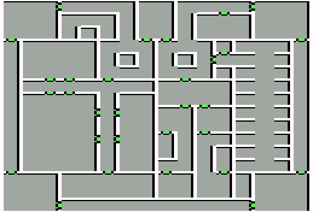

Castle Hillstone
| X | Y | Event |
| 3 | 13 | N-19 Capitor |
| 13 | 2 | Castle guards peddle uncle Spudly's New and Improved Quest Removal Elixor. It can be yours for only 19 gold. Buy it (y/n)? |
| 10 | 13 | Stairs to Dungeoun |
| 11 | 14 | Red Bishop |
| 12 | 2 | Food |
| 5 | 2 | Lord Slayer |
| 7 | 15 | Exit |